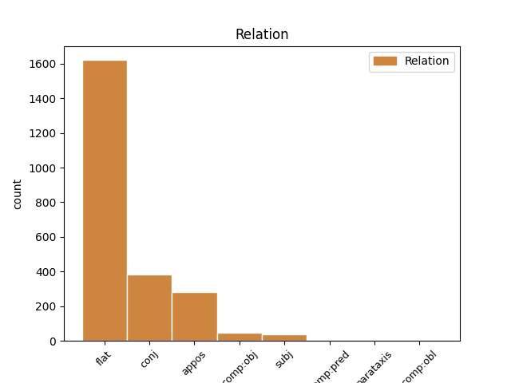
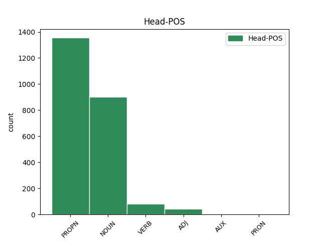
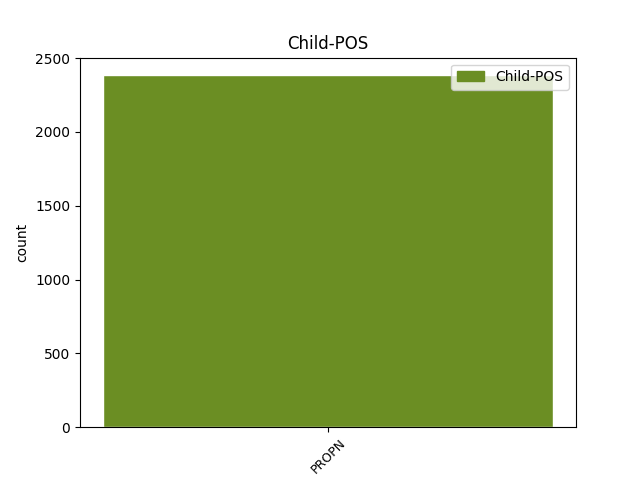

Distribution of features within this leaf



Agreement Rules sorted by frequency.
- When the dependent token is the flat multiword expression(flat) of the head token, and the head token is PROPN and the dependent token is PROPN.
1 Naime _ _ _ _ 0 _ _ _
2 , _ _ _ _ 0 _ _ _
3 2016. _ _ _ _ 0 _ _ _
4 jedan _ _ _ _ 0 _ _ _
5 pametni _ _ _ _ 0 _ _ _
6 automobil _ _ _ _ 0 _ _ _
7 američkog _ _ _ _ 0 _ _ _
8 proizvođača _ _ _ _ 0 _ _ _
9 Tesla Tesla PROPN Npmsn Case=Nom|Gender=Masc|Number=Sing 0 _ _ _
10 Motors Motors PROPN Npmsn Case=Nom|Gender=Masc|Number=Sing 9 flat _ _
11 nije _ _ _ _ 0 _ _ _
12 uspeo _ _ _ _ 0 _ _ _
13 da _ _ _ _ 0 _ _ _
14 uoči _ _ _ _ 0 _ _ _
15 razliku _ _ _ _ 0 _ _ _
16 između _ _ _ _ 0 _ _ _
17 bele _ _ _ _ 0 _ _ _
18 površine _ _ _ _ 0 _ _ _
19 prikolice _ _ _ _ 0 _ _ _
20 i _ _ _ _ 0 _ _ _
21 neba _ _ _ _ 0 _ _ _
22 i _ _ _ _ 0 _ _ _
23 došlo _ _ _ _ 0 _ _ _
24 je _ _ _ _ 0 _ _ _
25 do _ _ _ _ 0 _ _ _
26 sudara _ _ _ _ 0 _ _ _
27 sa _ _ _ _ 0 _ _ _
28 smrtnim _ _ _ _ 0 _ _ _
29 ishodom _ _ _ _ 0 _ _ _
30 . _ _ _ _ 0 _ _ _
1 Naime _ _ _ _ 0 _ _ _
2 , _ _ _ _ 0 _ _ _
3 2016. _ _ _ _ 0 _ _ _
4 jedan _ _ _ _ 0 _ _ _
5 pametni _ _ _ _ 0 _ _ _
6 automobil _ _ _ _ 0 _ _ _
7 američkog _ _ _ _ 0 _ _ _
8 proizvođača proizvođač NOUN Ncmsg Case=Gen|Gender=Masc|Number=Sing 0 _ _ _
9 Tesla Tesla PROPN Npmsn Case=Nom|Gender=Masc|Number=Sing 8 flat _ _
10 Motors _ _ _ _ 0 _ _ _
11 nije _ _ _ _ 0 _ _ _
12 uspeo _ _ _ _ 0 _ _ _
13 da _ _ _ _ 0 _ _ _
14 uoči _ _ _ _ 0 _ _ _
15 razliku _ _ _ _ 0 _ _ _
16 između _ _ _ _ 0 _ _ _
17 bele _ _ _ _ 0 _ _ _
18 površine _ _ _ _ 0 _ _ _
19 prikolice _ _ _ _ 0 _ _ _
20 i _ _ _ _ 0 _ _ _
21 neba _ _ _ _ 0 _ _ _
22 i _ _ _ _ 0 _ _ _
23 došlo _ _ _ _ 0 _ _ _
24 je _ _ _ _ 0 _ _ _
25 do _ _ _ _ 0 _ _ _
26 sudara _ _ _ _ 0 _ _ _
27 sa _ _ _ _ 0 _ _ _
28 smrtnim _ _ _ _ 0 _ _ _
29 ishodom _ _ _ _ 0 _ _ _
30 . _ _ _ _ 0 _ _ _
1 Ukratko _ _ _ _ 0 _ _ _
2 , _ _ _ _ 0 _ _ _
3 novo _ _ _ _ 0 _ _ _
4 Ljosino _ _ _ _ 0 _ _ _
5 ostvarenje _ _ _ _ 0 _ _ _
6 spada _ _ _ _ 0 _ _ _
7 u _ _ _ _ 0 _ _ _
8 srednji _ _ _ _ 0 _ _ _
9 vrednosni _ _ _ _ 0 _ _ _
10 nivo _ _ _ _ 0 _ _ _
11 i _ _ _ _ 0 _ _ _
12 više _ _ _ _ 0 _ _ _
13 će _ _ _ _ 0 _ _ _
14 da _ _ _ _ 0 _ _ _
15 vas _ _ _ _ 0 _ _ _
16 zabavi _ _ _ _ 0 _ _ _
17 nego _ _ _ _ 0 _ _ _
18 da _ _ _ _ 0 _ _ _
19 vas _ _ _ _ 0 _ _ _
20 odlučno _ _ _ _ 0 _ _ _
21 i _ _ _ _ 0 _ _ _
22 neopozivo _ _ _ _ 0 _ _ _
23 suoči _ _ _ _ 0 _ _ _
24 sa _ _ _ _ 0 _ _ _
25 slikom _ _ _ _ 0 _ _ _
26 savremenog _ _ _ _ 0 _ _ _
27 sveta _ _ _ _ 0 _ _ _
28 u _ _ _ _ 0 _ _ _
29 kojoj _ _ _ _ 0 _ _ _
30 se _ _ _ _ 0 _ _ _
31 , _ _ _ _ 0 _ _ _
32 na _ _ _ _ 0 _ _ _
33 neki _ _ _ _ 0 _ _ _
34 iznenađujuć _ _ _ _ 0 _ _ _
35 način _ _ _ _ 0 _ _ _
36 , _ _ _ _ 0 _ _ _
37 socijalna _ _ _ _ 0 _ _ _
38 stvarnost _ _ _ _ 0 _ _ _
39 Perua _ _ _ _ 0 _ _ _
40 i _ _ _ _ 0 _ _ _
41 Srbije Srbija PROPN Npfsg Case=Gen|Gender=Fem|Number=Sing 0 _ _ _
42 , _ _ _ _ 0 _ _ _
43 Lime Lima PROPN Npfsg Case=Gen|Gender=Fem|Number=Sing 41 conj _ _
44 i _ _ _ _ 0 _ _ _
45 Beograda _ _ _ _ 0 _ _ _
46 čine _ _ _ _ 0 _ _ _
47 još _ _ _ _ 0 _ _ _
48 malo _ _ _ _ 0 _ _ _
49 pa _ _ _ _ 0 _ _ _
50 analognim _ _ _ _ 0 _ _ _
51 ! _ _ _ _ 0 _ _ _
1 Novozelandski _ _ _ _ 0 _ _ _
2 haker haker NOUN Ncmsn Case=Nom|Gender=Masc|Number=Sing 0 _ _ _
3 Barnabi Barnabi PROPN Npmsn Case=Nom|Gender=Masc|Number=Sing 2 appos _ _
4 Džek _ _ _ _ 0 _ _ _
5 ( _ _ _ _ 0 _ _ _
6 1977 _ _ _ _ 0 _ _ _
7 – _ _ _ _ 0 _ _ _
8 2013 _ _ _ _ 0 _ _ _
9 ) _ _ _ _ 0 _ _ _
10 radio _ _ _ _ 0 _ _ _
11 je _ _ _ _ 0 _ _ _
12 na _ _ _ _ 0 _ _ _
13 sistemu _ _ _ _ 0 _ _ _
14 koji _ _ _ _ 0 _ _ _
15 bi _ _ _ _ 0 _ _ _
16 mogao _ _ _ _ 0 _ _ _
17 da _ _ _ _ 0 _ _ _
18 izazove _ _ _ _ 0 _ _ _
19 smrtonosan _ _ _ _ 0 _ _ _
20 strujni _ _ _ _ 0 _ _ _
21 udar _ _ _ _ 0 _ _ _
22 kod _ _ _ _ 0 _ _ _
23 svakoga _ _ _ _ 0 _ _ _
24 sa _ _ _ _ 0 _ _ _
25 ugrađenim _ _ _ _ 0 _ _ _
26 pejsmejkerom _ _ _ _ 0 _ _ _
27 . _ _ _ _ 0 _ _ _
1 Borislav Borislav PROPN Npmsn Case=Nom|Gender=Masc|Number=Sing 3 subj _ _
2 Pekić _ _ _ _ 0 _ _ _
3 pitao pitati VERB Vmp-sm Gender=Masc|Number=Sing|Tense=Past|VerbForm=Part|Voice=Act 0 _ _ _
4 se _ _ _ _ 0 _ _ _
5 početkom _ _ _ _ 0 _ _ _
6 devedesetih _ _ _ _ 0 _ _ _
7 godina _ _ _ _ 0 _ _ _
8 , _ _ _ _ 0 _ _ _
9 istinski _ _ _ _ 0 _ _ _
10 zabrinut _ _ _ _ 0 _ _ _
11 , _ _ _ _ 0 _ _ _
12 kako _ _ _ _ 0 _ _ _
13 je _ _ _ _ 0 _ _ _
14 uopšte _ _ _ _ 0 _ _ _
15 moguće _ _ _ _ 0 _ _ _
16 pisati _ _ _ _ 0 _ _ _
17 romane _ _ _ _ 0 _ _ _
18 i _ _ _ _ 0 _ _ _
19 pripovetke _ _ _ _ 0 _ _ _
20 na _ _ _ _ 0 _ _ _
21 tom _ _ _ _ 0 _ _ _
22 izopačenom _ _ _ _ 0 _ _ _
23 , _ _ _ _ 0 _ _ _
24 sunovraćenom _ _ _ _ 0 _ _ _
25 , _ _ _ _ 0 _ _ _
26 lažnom _ _ _ _ 0 _ _ _
27 jeziku _ _ _ _ 0 _ _ _
28 koji _ _ _ _ 0 _ _ _
29 je _ _ _ _ 0 _ _ _
30 postao _ _ _ _ 0 _ _ _
31 opšteprihvaćen _ _ _ _ 0 _ _ _
32 . _ _ _ _ 0 _ _ _
1 Hrvatski _ _ _ _ 0 _ _ _
2 geolozi _ _ _ _ 0 _ _ _
3 su _ _ _ _ 0 _ _ _
4 , _ _ _ _ 0 _ _ _
5 zajedno _ _ _ _ 0 _ _ _
6 sa _ _ _ _ 0 _ _ _
7 kolegama _ _ _ _ 0 _ _ _
8 iz _ _ _ _ 0 _ _ _
9 Sjedinjenih _ _ _ _ 0 _ _ _
10 Država _ _ _ _ 0 _ _ _
11 , _ _ _ _ 0 _ _ _
12 Italije _ _ _ _ 0 _ _ _
13 i _ _ _ _ 0 _ _ _
14 Velike velik ADJ Agpfsgy Case=Gen|Definite=Def|Degree=Pos|Gender=Fem|Number=Sing 0 _ _ _
15 Britanije Britanija PROPN Npfsg Case=Gen|Gender=Fem|Number=Sing 14 flat _ SpaceAfter=No
16 , _ _ _ _ 0 _ _ _
17 otkrili _ _ _ _ 0 _ _ _
18 da _ _ _ _ 0 _ _ _
19 se _ _ _ _ 0 _ _ _
20 Hrvatska _ _ _ _ 0 _ _ _
21 približava _ _ _ _ 0 _ _ _
22 Italiji _ _ _ _ 0 _ _ _
23 za _ _ _ _ 0 _ _ _
24 4 _ _ _ _ 0 _ _ _
25 milimetra _ _ _ _ 0 _ _ _
26 godišnje _ _ _ _ 0 _ _ _
27 . _ _ _ _ 0 _ _ _
1 Tako _ _ _ _ 0 _ _ _
2 sam _ _ _ _ 0 _ _ _
3 pre _ _ _ _ 0 _ _ _
4 dve _ _ _ _ 0 _ _ _
5 decenije _ _ _ _ 0 _ _ _
6 , _ _ _ _ 0 _ _ _
7 u _ _ _ _ 0 _ _ _
8 jednoj _ _ _ _ 0 _ _ _
9 bečkoj _ _ _ _ 0 _ _ _
10 knjižari _ _ _ _ 0 _ _ _
11 , _ _ _ _ 0 _ _ _
12 otkrio otkriti VERB Vmp-sm Gender=Masc|Number=Sing|Tense=Past|VerbForm=Part|Voice=Act 0 _ _ _
13 Zebalda Zebald PROPN Npmsay Animacy=Anim|Case=Acc|Gender=Masc|Number=Sing 12 comp:obj _ SpaceAfter=No
14 . _ _ _ _ 0 _ _ _
1 Reljić _ _ _ _ 0 _ _ _
2 , _ _ _ _ 0 _ _ _
3 međutim _ _ _ _ 0 _ _ _
4 , _ _ _ _ 0 _ _ _
5 ukazuje _ _ _ _ 0 _ _ _
6 da _ _ _ _ 0 _ _ _
7 se _ _ _ _ 0 _ _ _
8 Turska _ _ _ _ 0 _ _ _
9 i _ _ _ _ 0 _ _ _
10 dalje _ _ _ _ 0 _ _ _
11 nalazi _ _ _ _ 0 _ _ _
12 među _ _ _ _ 0 _ _ _
13 manje _ _ _ _ 0 _ _ _
14 važnim _ _ _ _ 0 _ _ _
15 ekonomskim _ _ _ _ 0 _ _ _
16 partnerima _ _ _ _ 0 _ _ _
17 u _ _ _ _ 0 _ _ _
18 regionu _ _ _ _ 0 _ _ _
19 -- _ _ _ _ 0 _ _ _
20 još _ _ _ _ 0 _ _ _
21 uvek _ _ _ _ 0 _ _ _
22 dominiraju _ _ _ _ 0 _ _ _
23 zemlje zemlja NOUN Ncfpn Case=Nom|Gender=Fem|Number=Plur 0 _ _ _
24 EU _ _ _ _ 0 _ _ _
25 i _ _ _ _ 0 _ _ _
26 Rusija Rusija PROPN Npfsn Case=Nom|Gender=Fem|Number=Sing 23 conj _ SpaceAfter=No
27 . _ _ _ _ 0 _ _ _
1 Protesti _ _ _ _ 0 _ _ _
2 su _ _ _ _ 0 _ _ _
3 počeli _ _ _ _ 0 _ _ _
4 nakon _ _ _ _ 0 _ _ _
5 što _ _ _ _ 0 _ _ _
6 su _ _ _ _ 0 _ _ _
7 vlasti _ _ _ _ 0 _ _ _
8 posumnjale _ _ _ _ 0 _ _ _
9 da _ _ _ _ 0 _ _ _
10 je _ _ _ _ 0 _ _ _
11 Abdulrašid Abdulrašid PROPN Npmsn Case=Nom|Gender=Masc|Number=Sing 0 _ _ _
12 D _ _ _ _ 0 _ _ _
13 , _ _ _ _ 0 _ _ _
14 25-godišnji _ _ _ _ 0 _ _ _
15 Avganistanac Avganistanac PROPN Npmsn Case=Nom|Gender=Masc|Number=Sing 11 appos _ SpaceAfter=No
16 , _ _ _ _ 0 _ _ _
17 zajedno _ _ _ _ 0 _ _ _
18 sa _ _ _ _ 0 _ _ _
19 četvoricom _ _ _ _ 0 _ _ _
20 sunarodnika _ _ _ _ 0 _ _ _
21 , _ _ _ _ 0 _ _ _
22 silovao _ _ _ _ 0 _ _ _
23 turistkinju _ _ _ _ 0 _ _ _
24 iz _ _ _ _ 0 _ _ _
25 Velike _ _ _ _ 0 _ _ _
26 Britanije _ _ _ _ 0 _ _ _
27 . _ _ _ _ 0 _ _ _
1 Mirjana Mirjana PROPN Npfsn Case=Nom|Gender=Fem|Number=Sing 3 subj _ _
2 Marković _ _ _ _ 0 _ _ _
3 optužena optužiti ADJ Appfsny Case=Nom|Definite=Def|Degree=Pos|Gender=Fem|Number=Sing|VerbForm=Part|Voice=Pass 0 _ _ _
4 za _ _ _ _ 0 _ _ _
5 zloupotrebu _ _ _ _ 0 _ _ _
6 položaja _ _ _ _ 0 _ _ _
1 Turska _ _ _ _ 0 _ _ _
2 je _ _ _ _ 0 _ _ _
3 bila _ _ _ _ 0 _ _ _
4 poslednja _ _ _ _ 0 _ _ _
5 destinacija _ _ _ _ 0 _ _ _
6 njegove _ _ _ _ 0 _ _ _
7 turneje _ _ _ _ 0 _ _ _
8 koja _ _ _ _ 0 _ _ _
9 je _ _ _ _ 0 _ _ _
10 uključivala _ _ _ _ 0 _ _ _
11 četiri _ _ _ _ 0 _ _ _
12 zemlje _ _ _ _ 0 _ _ _
13 među _ _ _ _ 0 _ _ _
14 kojima _ _ _ _ 0 _ _ _
15 su _ _ _ _ 0 _ _ _
16 još _ _ _ _ 0 _ _ _
17 bile _ _ _ _ 0 _ _ _
18 Velika velik ADJ Agpfsny Case=Nom|Definite=Def|Degree=Pos|Gender=Fem|Number=Sing 0 _ _ _
19 Britanija _ _ _ _ 0 _ _ _
20 , _ _ _ _ 0 _ _ _
21 Nemačka Nemačka PROPN Npfsn Case=Nom|Gender=Fem|Number=Sing 18 conj _ _
22 i _ _ _ _ 0 _ _ _
23 Italija _ _ _ _ 0 _ _ _
24 . _ _ _ _ 0 _ _ _
1 Predsedavajući predsedavajući ADJ Agpmsny Case=Nom|Definite=Def|Degree=Pos|Gender=Masc|Number=Sing 0 _ _ _
2 Predsedništva _ _ _ _ 0 _ _ _
3 Bosne _ _ _ _ 0 _ _ _
4 i _ _ _ _ 0 _ _ _
5 Hercegovine _ _ _ _ 0 _ _ _
6 Haris Haris PROPN Npmsn Case=Nom|Gender=Masc|Number=Sing 1 appos _ _
7 Silajdžić _ _ _ _ 0 _ _ _
8 i _ _ _ _ 0 _ _ _
9 predsednici _ _ _ _ 0 _ _ _
10 Srbije _ _ _ _ 0 _ _ _
11 , _ _ _ _ 0 _ _ _
12 Hrvatske _ _ _ _ 0 _ _ _
13 i _ _ _ _ 0 _ _ _
14 Crne _ _ _ _ 0 _ _ _
15 Gore _ _ _ _ 0 _ _ _
16 -- _ _ _ _ 0 _ _ _
17 Boris _ _ _ _ 0 _ _ _
18 Tadić _ _ _ _ 0 _ _ _
19 , _ _ _ _ 0 _ _ _
20 Ivo _ _ _ _ 0 _ _ _
21 Josipović _ _ _ _ 0 _ _ _
22 i _ _ _ _ 0 _ _ _
23 Filip _ _ _ _ 0 _ _ _
24 Vujanović _ _ _ _ 0 _ _ _
25 -- _ _ _ _ 0 _ _ _
26 sastali _ _ _ _ 0 _ _ _
27 su _ _ _ _ 0 _ _ _
28 se _ _ _ _ 0 _ _ _
29 u _ _ _ _ 0 _ _ _
30 subotu _ _ _ _ 0 _ _ _
31 ( _ _ _ _ 0 _ _ _
32 29. _ _ _ _ 0 _ _ _
33 maja _ _ _ _ 0 _ _ _
34 ) _ _ _ _ 0 _ _ _
35 u _ _ _ _ 0 _ _ _
36 Sarajevu _ _ _ _ 0 _ _ _
37 povodom _ _ _ _ 0 _ _ _
38 razgovora _ _ _ _ 0 _ _ _
39 o _ _ _ _ 0 _ _ _
40 članstvu _ _ _ _ 0 _ _ _
41 u _ _ _ _ 0 _ _ _
42 EU _ _ _ _ 0 _ _ _
43 . _ _ _ _ 0 _ _ _
1 " _ _ _ _ 0 _ _ _
2 Fehmiju _ _ _ _ 0 _ _ _
3 je _ _ _ _ 0 _ _ _
4 bio biti AUX Vap-sm Gender=Masc|Number=Sing|Tense=Past|VerbForm=Part|Voice=Act 0 _ _ _
5 najveći _ _ _ _ 0 _ _ _
6 Srbin Srbin PROPN Npmsn Case=Nom|Gender=Masc|Number=Sing 4 comp:pred _ _
7 među _ _ _ _ 0 _ _ _
8 Albancima _ _ _ _ 0 _ _ _
9 i _ _ _ _ 0 _ _ _
10 najveći _ _ _ _ 0 _ _ _
11 Albanac _ _ _ _ 0 _ _ _
12 među _ _ _ _ 0 _ _ _
13 Srbima _ _ _ _ 0 _ _ _
14 " _ _ _ _ 0 _ _ _
15 , _ _ _ _ 0 _ _ _
16 rekao _ _ _ _ 0 _ _ _
17 je _ _ _ _ 0 _ _ _
18 Lečić _ _ _ _ 0 _ _ _
19 . _ _ _ _ 0 _ _ _
1 Takođe _ _ _ _ 0 _ _ _
2 u _ _ _ _ 0 _ _ _
3 vestima _ _ _ _ 0 _ _ _
4 iz _ _ _ _ 0 _ _ _
5 kulture _ _ _ _ 0 _ _ _
6 : _ _ _ _ 0 _ _ _
7 Istanbul Istanbul PROPN Npmsn Case=Nom|Gender=Masc|Number=Sing 8 subj _ _
8 domaćin domaćin NOUN Ncmsn Case=Nom|Gender=Masc|Number=Sing 0 _ _ _
9 37. _ _ _ _ 0 _ _ _
10 Međunarodnog _ _ _ _ 0 _ _ _
11 muzičkog _ _ _ _ 0 _ _ _
12 festivala _ _ _ _ 0 _ _ _
13 , _ _ _ _ 0 _ _ _
14 a _ _ _ _ 0 _ _ _
15 Kipar _ _ _ _ 0 _ _ _
16 i _ _ _ _ 0 _ _ _
17 Grčka _ _ _ _ 0 _ _ _
18 potpisali _ _ _ _ 0 _ _ _
19 sporazum _ _ _ _ 0 _ _ _
20 o _ _ _ _ 0 _ _ _
21 saradnji _ _ _ _ 0 _ _ _
22 . _ _ _ _ 0 _ _ _
1 Evropska _ _ _ _ 0 _ _ _
2 komisija komisija NOUN Ncfsn Case=Nom|Gender=Fem|Number=Sing 0 _ _ _
3 ( _ _ _ _ 0 _ _ _
4 EK EK PROPN Npfsn Case=Nom|Gender=Fem|Number=Sing 2 parataxis _ SpaceAfter=No
5 ) _ _ _ _ 0 _ _ _
6 preporučila _ _ _ _ 0 _ _ _
7 je _ _ _ _ 0 _ _ _
8 početkom _ _ _ _ 0 _ _ _
9 novembra _ _ _ _ 0 _ _ _
10 da _ _ _ _ 0 _ _ _
11 se _ _ _ _ 0 _ _ _
12 to _ _ _ _ 0 _ _ _
13 učini _ _ _ _ 0 _ _ _
14 , _ _ _ _ 0 _ _ _
15 ali _ _ _ _ 0 _ _ _
16 je _ _ _ _ 0 _ _ _
17 istovremeno _ _ _ _ 0 _ _ _
18 navela _ _ _ _ 0 _ _ _
19 neke _ _ _ _ 0 _ _ _
20 ključne _ _ _ _ 0 _ _ _
21 oblasti _ _ _ _ 0 _ _ _
22 kojima _ _ _ _ 0 _ _ _
23 je _ _ _ _ 0 _ _ _
24 potrebno _ _ _ _ 0 _ _ _
25 posvetiti _ _ _ _ 0 _ _ _
26 pažnju _ _ _ _ 0 _ _ _
27 na _ _ _ _ 0 _ _ _
28 putu _ _ _ _ 0 _ _ _
29 ka _ _ _ _ 0 _ _ _
30 punopravnom _ _ _ _ 0 _ _ _
31 članstvu _ _ _ _ 0 _ _ _
32 u _ _ _ _ 0 _ _ _
33 EU _ _ _ _ 0 _ _ _
34 . _ _ _ _ 0 _ _ _
1 SDP _ _ _ _ 0 _ _ _
2 se _ _ _ _ 0 _ _ _
3 u _ _ _ _ 0 _ _ _
4 početku _ _ _ _ 0 _ _ _
5 opredelila _ _ _ _ 0 _ _ _
6 da _ _ _ _ 0 _ _ _
7 ostane _ _ _ _ 0 _ _ _
8 iznad _ _ _ _ 0 _ _ _
9 toga _ _ _ _ 0 _ _ _
10 , _ _ _ _ 0 _ _ _
11 koncentrišući _ _ _ _ 0 _ _ _
12 se _ _ _ _ 0 _ _ _
13 na _ _ _ _ 0 _ _ _
14 sopstvenu _ _ _ _ 0 _ _ _
15 platformu _ _ _ _ 0 _ _ _
16 umesto _ _ _ _ 0 _ _ _
17 da _ _ _ _ 0 _ _ _
18 napada napad NOUN Ncmsg Case=Gen|Gender=Masc|Number=Sing 0 _ _ _
19 HDZ HDZ PROPN Npmsan Animacy=Inan|Case=Acc|Gender=Masc|Number=Sing 18 comp:obj _ SpaceAfter=No
20 . _ _ _ _ 0 _ _ _
1 On on PRON Pp3msn Case=Nom|Gender=Masc|Number=Sing|Person=3|PronType=Prs 0 _ _ _
2 i _ _ _ _ 0 _ _ _
3 Cvetanov Cvetanov PROPN Npmsn Case=Nom|Gender=Masc|Number=Sing 1 conj _ _
4 su _ _ _ _ 0 _ _ _
5 , _ _ _ _ 0 _ _ _
6 međutim _ _ _ _ 0 _ _ _
7 , _ _ _ _ 0 _ _ _
8 takođe _ _ _ _ 0 _ _ _
9 rekli _ _ _ _ 0 _ _ _
10 da _ _ _ _ 0 _ _ _
11 su _ _ _ _ 0 _ _ _
12 svi _ _ _ _ 0 _ _ _
13 zapisnici _ _ _ _ 0 _ _ _
14 sa _ _ _ _ 0 _ _ _
15 sastanka _ _ _ _ 0 _ _ _
16 između _ _ _ _ 0 _ _ _
17 Petkova _ _ _ _ 0 _ _ _
18 i _ _ _ _ 0 _ _ _
19 braće _ _ _ _ 0 _ _ _
20 Galev _ _ _ _ 0 _ _ _
21 uništeni _ _ _ _ 0 _ _ _
22 . _ _ _ _ 0 _ _ _
1 Neki _ _ _ _ 0 _ _ _
2 zaključci _ _ _ _ 0 _ _ _
3 o _ _ _ _ 0 _ _ _
4 tome _ _ _ _ 0 _ _ _
5 pojavljuju _ _ _ _ 0 _ _ _
6 se _ _ _ _ 0 _ _ _
7 u _ _ _ _ 0 _ _ _
8 studiji _ _ _ _ 0 _ _ _
9 koju _ _ _ _ 0 _ _ _
10 je _ _ _ _ 0 _ _ _
11 uradila _ _ _ _ 0 _ _ _
12 EBRD _ _ _ _ 0 _ _ _
13 , _ _ _ _ 0 _ _ _
14 naslovljenoj naslovljen ADJ Agpfsly Case=Loc|Definite=Def|Degree=Pos|Gender=Fem|Number=Sing 0 _ _ _
15 " _ _ _ _ 0 _ _ _
16 Jugoistočna _ _ _ _ 0 _ _ _
17 Evropa Evropa PROPN Npfsn Case=Nom|Gender=Fem|Number=Sing 14 comp:pred _ _
18 u _ _ _ _ 0 _ _ _
19 žiži _ _ _ _ 0 _ _ _
20 " _ _ _ _ 0 _ _ _
21 , _ _ _ _ 0 _ _ _
22 koja _ _ _ _ 0 _ _ _
23 je _ _ _ _ 0 _ _ _
24 nedavno _ _ _ _ 0 _ _ _
25 objavljena _ _ _ _ 0 _ _ _
26 kao _ _ _ _ 0 _ _ _
27 knjiga _ _ _ _ 0 _ _ _
28 . _ _ _ _ 0 _ _ _
Disagree Examples:
1 Medijski _ _ _ _ 0 _ _ _
2 mogul mogul NOUN Ncmsn Case=Nom|Gender=Masc|Number=Sing 0 _ _ _
3 Velija Velija PROPN Npfsn Case=Nom|Gender=Fem|Number=Sing 2 appos _ _
4 Ramkovski _ _ _ _ 0 _ _ _
5 osuđen _ _ _ _ 0 _ _ _
6 je _ _ _ _ 0 _ _ _
7 na _ _ _ _ 0 _ _ _
8 13 _ _ _ _ 0 _ _ _
9 godina _ _ _ _ 0 _ _ _
10 zatvora _ _ _ _ 0 _ _ _
11 zbog _ _ _ _ 0 _ _ _
12 utaje _ _ _ _ 0 _ _ _
13 poreza _ _ _ _ 0 _ _ _
14 i _ _ _ _ 0 _ _ _
15 pranja _ _ _ _ 0 _ _ _
16 novca _ _ _ _ 0 _ _ _
17 . _ _ _ _ 0 _ _ _
1 Ramkovski _ _ _ _ 0 _ _ _
2 je _ _ _ _ 0 _ _ _
3 delovao _ _ _ _ 0 _ _ _
4 preko _ _ _ _ 0 _ _ _
5 svojih _ _ _ _ 0 _ _ _
6 15 _ _ _ _ 0 _ _ _
7 firmi _ _ _ _ 0 _ _ _
8 -- _ _ _ _ 0 _ _ _
9 koje _ _ _ _ 0 _ _ _
10 takođe _ _ _ _ 0 _ _ _
11 posluju _ _ _ _ 0 _ _ _
12 u _ _ _ _ 0 _ _ _
13 Turskoj Turska PROPN Npfsl Case=Loc|Gender=Fem|Number=Sing 0 _ _ _
14 i _ _ _ _ 0 _ _ _
15 SAD SAD PROPN Npmsn Case=Nom|Gender=Masc|Number=Sing 13 conj _ _
16 -- _ _ _ _ 0 _ _ _
17 čije _ _ _ _ 0 _ _ _
18 je _ _ _ _ 0 _ _ _
19 sedište _ _ _ _ 0 _ _ _
20 naveo _ _ _ _ 0 _ _ _
21 na _ _ _ _ 0 _ _ _
22 adresi _ _ _ _ 0 _ _ _
23 A1 _ _ _ _ 0 _ _ _
24 TV _ _ _ _ 0 _ _ _
25 . _ _ _ _ 0 _ _ _
1 Član _ _ _ _ 0 _ _ _
2 Predsedništva _ _ _ _ 0 _ _ _
3 Bosne Bosna PROPN Npfsg Case=Gen|Gender=Fem|Number=Sing 0 _ _ _
4 i _ _ _ _ 0 _ _ _
5 Hercegovine _ _ _ _ 0 _ _ _
6 ( _ _ _ _ 0 _ _ _
7 BiH BiH PROPN Npmsn Case=Nom|Gender=Masc|Number=Sing 3 appos _ SpaceAfter=No
8 ) _ _ _ _ 0 _ _ _
9 Željko _ _ _ _ 0 _ _ _
10 Komšić _ _ _ _ 0 _ _ _
11 podneo _ _ _ _ 0 _ _ _
12 je _ _ _ _ 0 _ _ _
13 u _ _ _ _ 0 _ _ _
14 utorak _ _ _ _ 0 _ _ _
15 ( _ _ _ _ 0 _ _ _
16 20. _ _ _ _ 0 _ _ _
17 marta _ _ _ _ 0 _ _ _
18 ) _ _ _ _ 0 _ _ _
19 ostavku _ _ _ _ 0 _ _ _
20 na _ _ _ _ 0 _ _ _
21 mesto _ _ _ _ 0 _ _ _
22 potpredsednika _ _ _ _ 0 _ _ _
23 Socijaldemokratske _ _ _ _ 0 _ _ _
24 partije _ _ _ _ 0 _ _ _
25 ( _ _ _ _ 0 _ _ _
26 SDP _ _ _ _ 0 _ _ _
27 ) _ _ _ _ 0 _ _ _
28 i _ _ _ _ 0 _ _ _
29 dugogodišnjeg _ _ _ _ 0 _ _ _
30 člana _ _ _ _ 0 _ _ _
31 najvišeg _ _ _ _ 0 _ _ _
32 rukovodstva _ _ _ _ 0 _ _ _
33 stranke _ _ _ _ 0 _ _ _
34 . _ _ _ _ 0 _ _ _
1 Član _ _ _ _ 0 _ _ _
2 Predsedništva _ _ _ _ 0 _ _ _
3 Bosne _ _ _ _ 0 _ _ _
4 i _ _ _ _ 0 _ _ _
5 Hercegovine _ _ _ _ 0 _ _ _
6 ( _ _ _ _ 0 _ _ _
7 BiH _ _ _ _ 0 _ _ _
8 ) _ _ _ _ 0 _ _ _
9 Željko _ _ _ _ 0 _ _ _
10 Komšić _ _ _ _ 0 _ _ _
11 podneo _ _ _ _ 0 _ _ _
12 je _ _ _ _ 0 _ _ _
13 u _ _ _ _ 0 _ _ _
14 utorak _ _ _ _ 0 _ _ _
15 ( _ _ _ _ 0 _ _ _
16 20. _ _ _ _ 0 _ _ _
17 marta _ _ _ _ 0 _ _ _
18 ) _ _ _ _ 0 _ _ _
19 ostavku _ _ _ _ 0 _ _ _
20 na _ _ _ _ 0 _ _ _
21 mesto _ _ _ _ 0 _ _ _
22 potpredsednika _ _ _ _ 0 _ _ _
23 Socijaldemokratske _ _ _ _ 0 _ _ _
24 partije partija NOUN Ncfsg Case=Gen|Gender=Fem|Number=Sing 0 _ _ _
25 ( _ _ _ _ 0 _ _ _
26 SDP SDP PROPN Npmsn Case=Nom|Gender=Masc|Number=Sing 24 appos _ SpaceAfter=No
27 ) _ _ _ _ 0 _ _ _
28 i _ _ _ _ 0 _ _ _
29 dugogodišnjeg _ _ _ _ 0 _ _ _
30 člana _ _ _ _ 0 _ _ _
31 najvišeg _ _ _ _ 0 _ _ _
32 rukovodstva _ _ _ _ 0 _ _ _
33 stranke _ _ _ _ 0 _ _ _
34 . _ _ _ _ 0 _ _ _
1 Mnogi _ _ _ _ 0 _ _ _
2 članovi _ _ _ _ 0 _ _ _
3 stranke _ _ _ _ 0 _ _ _
4 misle _ _ _ _ 0 _ _ _
5 da _ _ _ _ 0 _ _ _
6 je _ _ _ _ 0 _ _ _
7 Lagumdžijina _ _ _ _ 0 _ _ _
8 odluka _ _ _ _ 0 _ _ _
9 da _ _ _ _ 0 _ _ _
10 uđe _ _ _ _ 0 _ _ _
11 u _ _ _ _ 0 _ _ _
12 koaliciju _ _ _ _ 0 _ _ _
13 sa _ _ _ _ 0 _ _ _
14 Strankom stranka NOUN Ncfsi Case=Ins|Gender=Fem|Number=Sing 0 _ _ _
15 demokratske _ _ _ _ 0 _ _ _
16 akcije _ _ _ _ 0 _ _ _
17 ( _ _ _ _ 0 _ _ _
18 SDA SDA PROPN Npmsn Case=Nom|Gender=Masc|Number=Sing 14 appos _ SpaceAfter=No
19 ) _ _ _ _ 0 _ _ _
20 bila _ _ _ _ 0 _ _ _
21 autokratska _ _ _ _ 0 _ _ _
22 -- _ _ _ _ 0 _ _ _
23 i _ _ _ _ 0 _ _ _
24 posmatrana _ _ _ _ 0 _ _ _
25 je _ _ _ _ 0 _ _ _
26 kao _ _ _ _ 0 _ _ _
27 potpuna _ _ _ _ 0 _ _ _
28 izdaja _ _ _ _ 0 _ _ _
29 od _ _ _ _ 0 _ _ _
30 strane _ _ _ _ 0 _ _ _
31 većine _ _ _ _ 0 _ _ _
32 stranačkih _ _ _ _ 0 _ _ _
33 krugova _ _ _ _ 0 _ _ _
34 i _ _ _ _ 0 _ _ _
35 građana _ _ _ _ 0 _ _ _
36 koji _ _ _ _ 0 _ _ _
37 su _ _ _ _ 0 _ _ _
38 podržali _ _ _ _ 0 _ _ _
39 SPD _ _ _ _ 0 _ _ _
40 na _ _ _ _ 0 _ _ _
41 izborima _ _ _ _ 0 _ _ _
42 . _ _ _ _ 0 _ _ _